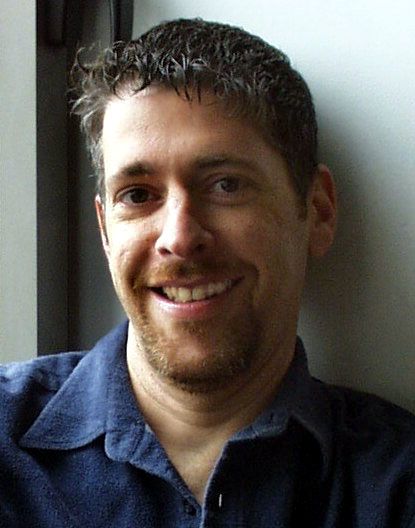

Brad Rubenstein
 Brad Rubenstein has trained, coached, and led organizations and project teams in technology, finance, and the arts for over twenty years. He is currently a partner at Celerity Consulting, which works with organizations internationally, to upgrade team behavior in simple, effective ways to achieve results faster and more reliably.
He is co-author (with Adam Josephs) of the book Risk Up Front: Managing Projects in a Complex World, published in 2018 by Lioncrest.
The core of Celerity’s approach is to systematically upgrade the transparency, accountability and commitment of teams and their management, particularly focused on the clear articulation of goals and the early and proactive identification and mitigation of risk. They work frequently with management teams as well as product development, operational and customer facing departments. Their “hands on” model effectively creates lasting changes in behavior and results within their client companies.
Brad’s perspective on organizational change and team performance were strongly influenced by several years working with both technical and financial teams on Wall Street. His recognized quantitative and organizational skills led him in 1994 to the Derivatives Strategies group at Goldman Sachs, where as a Vice President he was principally involved in cross-functional efforts to deploy risk management policies and practices in their trading divisions.
An appreciation for the culture of entrepreneurial organizations forms the core of the Celerity approach, forged in the trenches of Silicon Valley. There, Brad took on the early deployment and analysis of software project cost estimation technology at Hewlett-Packard, served as a member of the technical staff at a very young Sun Microsystems, and later became the Director of Engineering at Quorum Software Systems, an early effort in cross-platform software portability platforms.
He received his Ph.D. from the University of California, Berkeley, in Computer Science, for research culminating in his doctoral thesis, Data Management of Musical Information (Berkeley, 1987). His undergraduate work at Berkeley focused on socio-linguistics and electrical engineering, both of which inform the communication and technical project skills he instills in organizations through his current work.
Brad is an avid performer and producer. He sang with the San Francisco Symphony Chorus for over fifteen years while he made his home in the San Francisco Bay Area. While in New York City, he served as the chairman of the non-profit New York Festival of Song, producing original song programs for the New York stage. He is also a founder and principal at Red Sand Media Partners, a film and theatrical investment and production company.